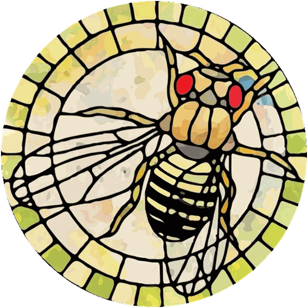
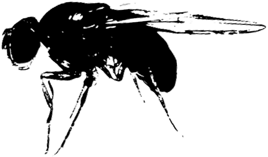
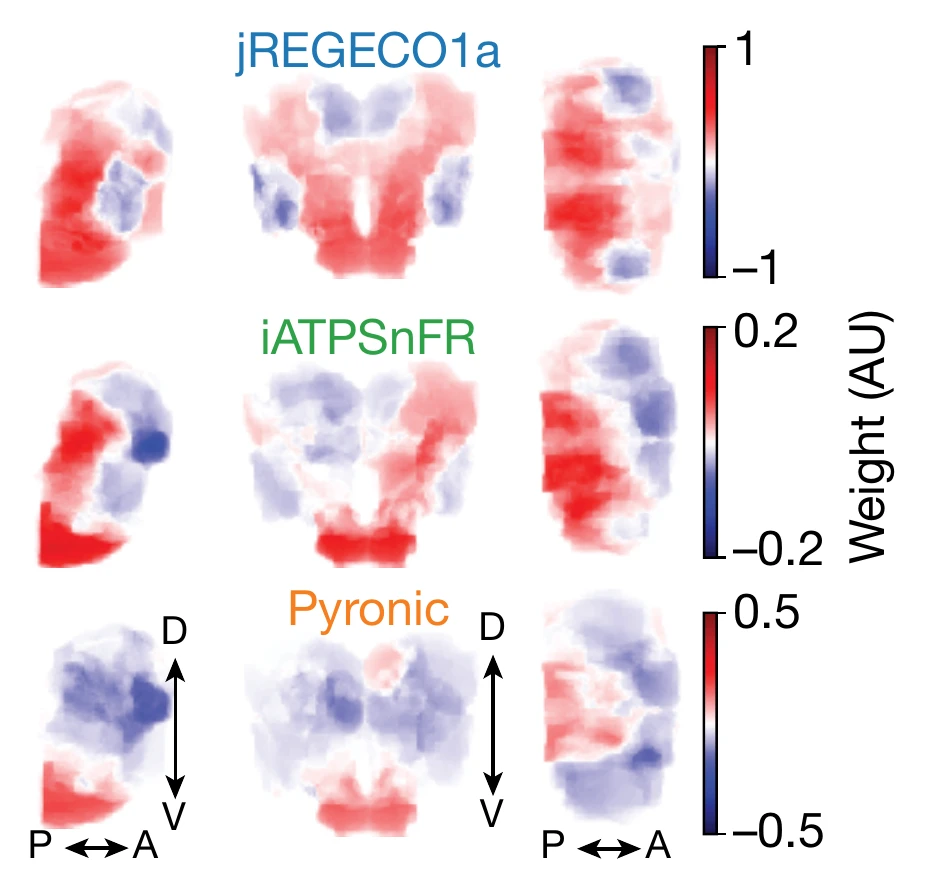
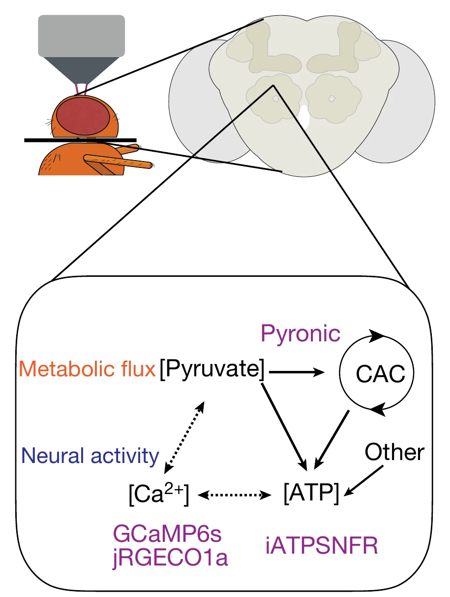
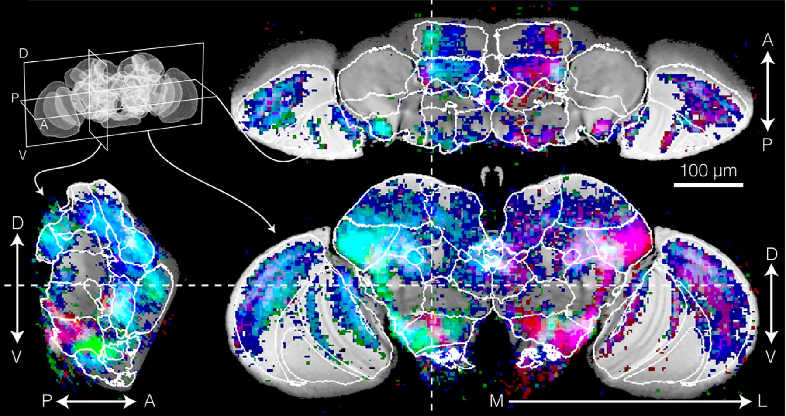
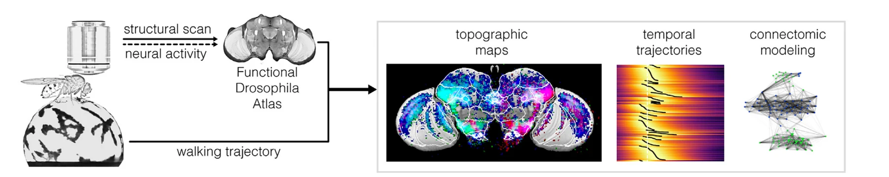
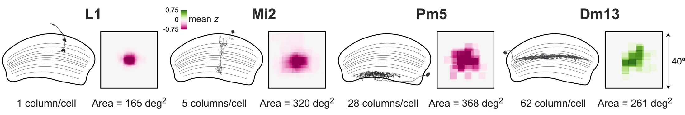
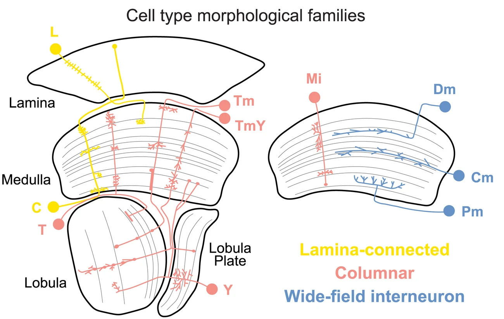
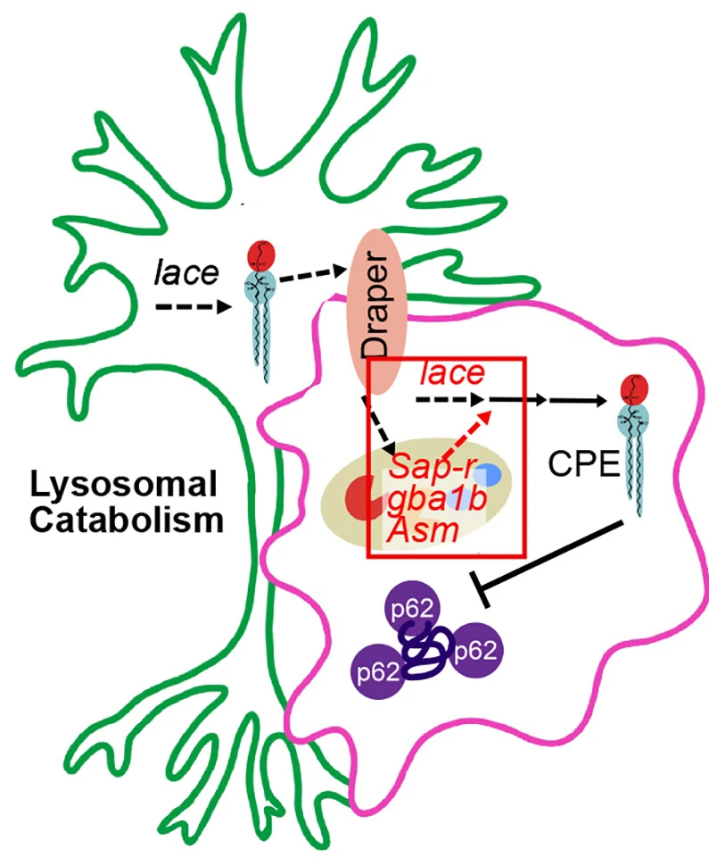
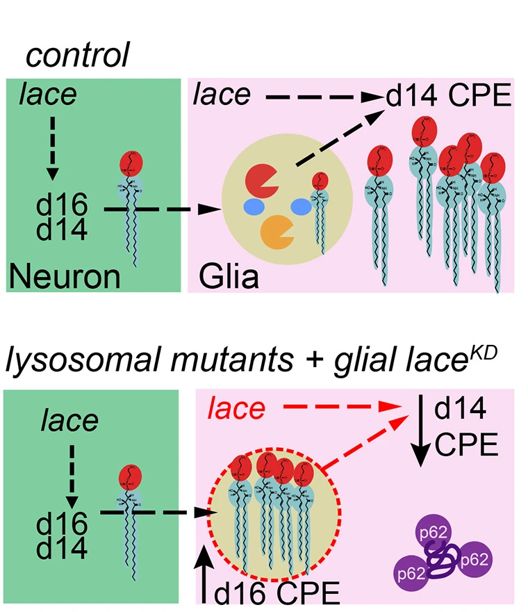

Stanford University · Department of Neurobiology
How the brain computes, one fruit fly at a time.
The Clandinin Lab studies how neuronal circuits assemble during development, how they are maintained across adult life, and how they carry out the computations that drive behavior — using the remarkable brain of Drosophila as a model.

Interactive
From the eye to a single neuron
The red canopy is a fruit fly's compound eye; the branches below are the neurons of its visual system. Move your mouse across the canvas — as you spread the branches, the whole visual system resolves into a single neuron, with its dendrites, soma and nucleus, axon, and the energy that keeps it firing.
A whole visual system
A fruit fly's compound eye is built from roughly 800 ommatidia, each feeding a column of neurons. Signals pass from the photoreceptors through the lamina, medulla, and lobula — stacked layers of circuitry where motion, color, and form are computed before they ever reach the legs and wings. The branching stands in for that cascade: a few inputs fanning out into the architecture of sight.
Down to two neurons
Spread the branches all the way and the system resolves into a pair of neurons meeting at a synapse — each with its dendrites, soma and nucleus, and axon. Firing across that connection is metabolically expensive: neurons regenerate ATP mostly through oxidative phosphorylation (OXPHOS) in their mitochondria, matching energy supply to the moment-to-moment demands of computation. The lab measures how that energy budget shifts as a circuit works — supply meeting demand, spike by spike.
Neural correlates of behavior
Watching behavior, reading the brain
A tethered fly can walk, turn, and react on an air-cushioned ball while we image its brain — so we can line up what the animal does with what its neurons are doing. This is how we study the neural correlates of behavior: the split-second escape from a looming threat, the pull of a moving scene, and the way sleep and arousal reshape activity across the whole brain.

Our Research
Four pillars of inquiry
Our laboratory is focused on two questions, namely, how do complex neuronal circuits assemble during development and disassemble in disease and how do such circuits mediate the complex computations essential to behavior? By examining the interplay between these questions, we hope to uncover fundamental new insights into the molecular mechanisms and functional consequences of neurodegenerative disease. My lab has developed a new model by which interactions among developing neurons determine the wiring diagram of the brain, and we have defined the structure of one of the fundamental computational units of the visual system, a circuit that measures the movement of objects across your eye. More recent work has uncovered a new molecular mechanism by which genes associated with Parkinson's Disease are linked to the loss of connections between neurons. Our hope is that these latter results will inspire new therapeutic approaches to this disorder.
Energy production and use in the brain →
By mass, human brains are as energetically expensive as the heart, yet our understanding of how the brain uses energy to compute remains incredibly thin. We ask how energy use maps onto single cells, individual synapses and specific behaviors.
Understanding behavior at brain-wide scale →
Fly behavior spans sensorimotor responses, the seemingly voluntary movements of a freely walking animal, and fundamental behaviors like sleep. We ask how complex, dynamic patterns of brain-wide activity emerge, and how they lead to specific behavioral outcomes.
Linking structure to function in the visual system →
The fly visual system performs many of the same computations as the human brain, and at least one of them, motion processing, uses algorithms very similar to those of vertebrates. We ask how its wiring diagram and the morphology of each cell type implement these computations.
Neurodegeneration →
Our deep understanding of brain function lets us analyze how circuits are affected by neurodegenerative disease and aging, with a focus on genes linked to lipid metabolism and Parkinson’s Disease, and on how the brain responds to environmental stressors.
People
Meet the lab
A community of biologists, physicists, and engineers united by a fascination with how brains compute. Tap any card to read more.
Principal Investigator
Postdoctoral Fellows
Graduate Students
Students & Staff
Pillars of Inquiry · 01
Energy production and use in the brain
By mass, human brains are as energetically expensive as the heart, yet while we know well how the heart spends energy, our understanding of how the brain uses energy to compute remains incredibly thin.
Click a heading to read more.
Energy production tracks activity and behavior across the brain
Our previous work showed that fly brains dynamically modulate energy production at brain-wide scale in coordination with behavior.
By pairing two-photon imaging with sensors that read out neural activity and energy metabolism at the same time, we found that activity drives changes in metabolism, tightly coupling the two across brain networks. Even a brief burst of activity produces a rapid, lasting rise in ATP, as if neurons stock up for the work ahead, and even small movements reshape activity and metabolism across much of the brain.

From whole brains to single synapses
Current work seeks to understand how energy use maps onto single cells, individual synapses and specific behaviors.

Pillars of Inquiry · 02
Understanding behavior at brain-wide scale
Fly behavior is incredibly rich, spanning sensorimotor responses in which specific motor actions are associated with particular stimuli, to the seemingly voluntary movements of a freely walking animal, to fundamental behaviors like sleep.
Click a heading to read more.
Brain-wide activity and internal state
Our previous work has shown how some of these behaviors require the coordinated activity of many neurons and are dependent on the internal state of the animal.
Turning: mapping locomotion across the brain
How does the brain organize walking? Imaging the entire brain of flies as they walk, we found that neurons tuned to forward motion or to turning are grouped together, forming maps in regions involved in navigation, memory, sensory processing and motor control, and in some regions never before linked to locomotion.
Waves of activity sweep across these maps in a consistent order, some anticipating the next movement. Aligning the maps to the connectome points to the circuits likely to drive each maneuver.

Loom response: choosing how to escape
When a dark object looms toward it, a fly can respond in different ways. By imaging the whole brain as flies faced a looming threat, we found that distinct patterns of brain-wide activity predict which action the fly will choose.
How activity patterns become behavior
Current work seeks to understand how these complex, dynamic patterns emerge, and how they lead to specific behavioral outcomes.

Pillars of Inquiry · 03
Linking structure to function in the visual system
The visual system of the fly is capable of many of the same computations as those found in the human brain, and past work showed that at least one of these computations, motion processing, uses algorithms that are very similar to those used in vertebrates.
Click a heading to read more.
Does the wiring diagram predict what neurons do?
Connectomes are increasingly used to predict what neurons do, but those predictions are rarely checked against real measurements. We recorded the visual responses of 91 cell types in the fly and compared them with predictions from their wiring.
The wiring predicted some properties well, such as orientation tuning, but others poorly, such as receptive field size. The strongest synaptic inputs carry outsized influence over how a neuron responds, making them a powerful constraint for models, and physiology turned out to predict wiring better than wiring predicts physiology.

How wiring and form implement computation
Current work focuses on understanding how the complex wiring diagram and rich morphological diversity of each cell type implement these computations using a variety of sensors.

Pillars of Inquiry · 04
Neurodegeneration
Our deep understanding of brain function puts us in a powerful position to analyze how circuit function is affected by neurodegenerative disease and aging. Of particular interest are genes associated with lipid metabolism and Parkinson’s Disease, and how their functions might be coordinated across cell types and circuits to preserve brain health.
Click a heading to read more.
Glia recycle lipids from neurons
Glia can get the lipids they need by engulfing pieces of neurons. They convert this material into specialized lipids called ceramide phosphoethanolamines, the fly’s version of sphingomyelin.
These lipids let glia branch out and grow into the brain’s synaptic regions, a key step in circuit maturation. When this fails, brains end up with fewer synapses.

Sphingolipids and glial autophagy
As neural circuits form, levels of specific sphingolipids in the fly brain rise sharply. Disrupting how these lipids are made or broken down impairs autophagy in glia, the process cells use to clear out and recycle their own components.

Environmental stressors and new genetic screens
Current work focuses on exploring how the brain responds to environmental stressors, with the goal of developing new kinds of genetic screens that can identify the critical processes that these environmental factors perturb.
Our hope is that these studies will inform the development of new therapeutic strategies.
People
Lab Alumni
- Ashley Smart PhD
- Lianna Wat PhD
- Alex Yukun Hao PhD
- Michelle Pang
- Janina Troper
- Ilana Zucker-Scharff
- John Vaughen PhD, Sandler Faculty Fellow, UCSF
- Bella Brezovec PhD, Postdoctoral Fellow, Princeton
- Avery Krieger PhD
- Max Turner PhD, Assistant Professor of Biological Sciences, University at Albany
- Arnaldo Carreira-Rosario PhD, Assistant Professor of Biology, Duke University
- Andrew Berger, Graduate Student, University of Colorado Boulder
- Niyathi Annamaneni, Graduate Student, Yale University
- Ryan Lee, Undergraduate Student, Brown University
- Brianna Garcia
- Kevin Mann PhD, Applications Scientist, Bruker
- Ina Anreiter PhD, Assistant Professor, University of Toronto
- Ryan York PhD, Scientist, Arcadia Science
- Mohammed Osman, Software/Data Engineer, Harvard Medical School
- Sharon Su, Graduate Student, Columbia
- Jesse Isaacman-Beck, Science & Technology Policy Fellow, AAAS
- Kristine Paik, Medical Student, Weill Cornell
- Leland Owens
- Theresa Logan-Garbisch, Graduate Student, Stanford University
- David Zimmerman, Graduate Student, Harvard University
- Sabera Talukder, Software Engineer and Experimentalist, Chan Zuckerberg Biohub
- Helen H. Yang PhD, Postdoctoral Fellow, Harvard University
- Allan Borrayo, Administrative Associate, Stanford University
- Jonathan C.S. Leong MD PhD, Resident, Harvard University
- Marjorie Xie, Graduate Student, Columbia
- Irving Wang PhD, Scientist, Counsyl
- Yvette Fisher PhD, Assistant Professor, UC Berkeley
- Erin L. Barnhart PhD, Assistant Professor, Columbia
- Jennifer J. Esch PhD, Analyst, Boston Consulting Group
- Xiaojing Gao PhD, Postdoctoral Fellow, Caltech
- Eugene Song, Masters Program in Computer Science, UC Berkeley
- Yen Chin Chang, Doctoral Student, Academica Sinica, Taiwan
- Jessica Tsai MD PhD, Resident Physician in Pediatrics at Boston Children's Hospital
- Marion Silies PhD, Group Leader, European Neurosciences Institute, Göttingen
- Tina Schwabe PhD, Scientist, Neurogenetic and Cell Biology Lead at Alector
- Pat Graves, Lab Manager, OHSU
- Sheetal Bhalerao PhD, Technical Assistant, IMBA
- Daryl Gohl PhD, Research and Development Lead, University of Minnesota Genetics Center
- Limor Freifeld PhD, Postdoctoral Fellow, MIT
- Mathias Wernet PhD, Group Leader, University of Berlin
- Saskia E.J. de Vries PhD, Scientist II, Allen Institute for Brain Science
- Damon A. Clark PhD, Assistant Professor, Yale University
- Jennifer Hwa PhD, Postdoc, UCSF
- Martha Klovstad PhD, Research Associate at the Cardiovascular Resource Group and Editor at Science Editors Network
- Kwang-Min Choe PhD, Assistant Professor at Yonsei University, Korea
- Joshua Mast PhD, Research Scientist, Mission Bio.
- Pei-Ling Chen MD/PhD, Oncology Pathology Fellow, MD Anderson
- Alex Katsov PhD, Postdoctoral Fellow, Rockefeller University
- Saurabh Prakash MD/PhD, Private Practice
- Mariel Velez MD/PhD, Epilepsy Fellowship, Stanford University
- Allison Komiyama PhD, Private Regulatory Consultant
- Ali Bright
- Katharine M. H. Tomalty, UCDavis DVM/PhD
- Teresa Wu, Medical Student, Stanford University
- Helen Mclendon, Graduate Student, UCSF
- Kelsey Clark, Assistant Professor, Montana State University
- Francisco Luongo, Graduate Student, UCSF
- Aaron Rudin, Medical School, UWash
Open-Source Tools
Tools we build & share
Methods and open-source software developed in the lab and shared with the neuroscience community. Choose a tool to see what it does and the work behind it.
Fly stocks
InSITE lines
The lab developed InSITE (Integrase Swappable In vivo Targeting Element), a collection of GAL4 enhancer-trap lines in which GAL4 can be swapped for other transcriptional regulators such as lexA or QF through simple genetic crosses (Gohl et al., 2011). The lines are available from the Bloomington Drosophila Stock Center.
Publications
Publications
Browse the lab's work by year, color-coded by topic. Search by author, title, or journal, filter by topic, and click any entry to read the paper.
Community & Outreach
Outreach
Beyond the bench, the lab helps run programs that build a more open, candid, and supportive scientific community.
Join Us
Come work with us
We are always looking for curious, collaborative people who want to understand how circuits compute. We value rigor, creativity, kindness, and a good pun. Below are the main ways to get involved.
Prospective Graduate Students
Students join the lab through Stanford's graduate programs in Neurosciences and related departments. If our work excites you, apply to the relevant PhD program and mention your interest in the lab in your application. Current Stanford students are warmly welcome to reach out about rotations.
Prospective Postdocs
We welcome inquiries from postdoctoral candidates with backgrounds in neuroscience, genetics, physics, engineering, or computation. Please email Tom a brief description of your research interests, a CV, and the names of two or three references.
Undergraduates & Co-Terms
Motivated Stanford undergraduates and co-term students can gain hands-on research experience in the lab. Reach out describing your interests and availability, and we'll talk about projects that might be a good fit.